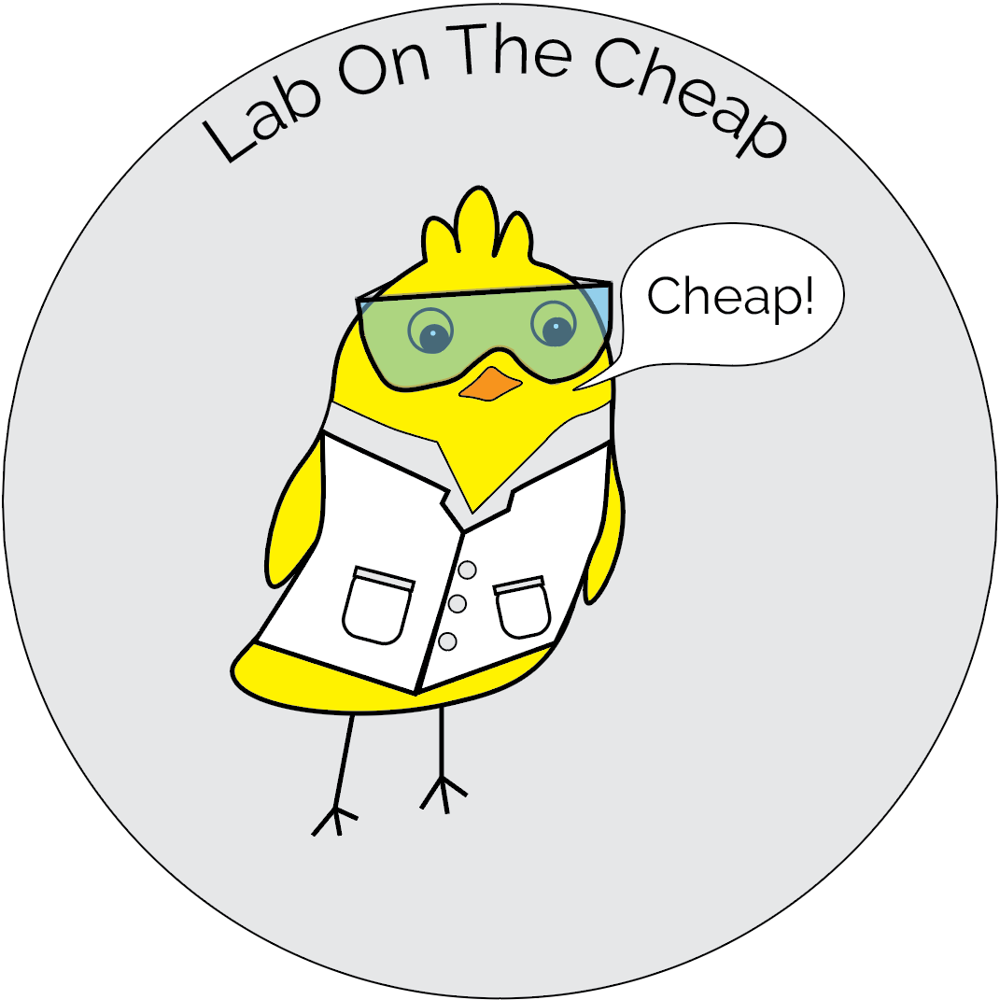

The Science Cheep - #1

Welcome to (working title) The Science Cheep, written for Lab On The Cheap, giving you all the updates in the DIY open-source world of science from the past week. Let us know what you think about this and if we should keep doing it! Sign up for our newsletter here.
NEWS
Call for discussion about best practices in open microscopy
- Stefano Coppola, Andrew G York, Ricardo Henriques have called for a badly needed discussion about best practices in Open Microscopy Data https://zenodo.org/record/3855608
PAPERS
- FishCam: A low-cost open source autonomous camera for aquatic research
- Low-Cost and Precise Inline Pressure Sensor Housing and DAQ for Use in Laboratory Experiments
- Low-Cost Synthesis of Gold Nanoparticles from Reused Traditional Gold Leaf
- Improved library preparation method for cost-effective and high-throughput next-generation sequencing
- Low cost sensitive transrectal photoacoustic probe with single-fiber bright-field illumination for in vivo canine prostate imaging and real-time biopsy needle guidance
- Craniobot Update: Assembly and operation of an open-source, computer numerical controlled (CNC) robot for performing cranial microsurgical procedures
- Development of a Low-cost Ultrasonic Sensor for Groundwater Monitoring in Coastal Environments
- Low-cost 3D scanning systems for cultural heritage documentation
PREPRINTS
OTHER
- Hackaday shows a fun 3D-printable toy to show kids one method by which exoplanets are discovered.
- You can now buy a Craniobot, a project we covered in March, directly from Labmaker.
- Check out Rice University’s emergency ventilator plans: